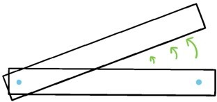
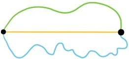
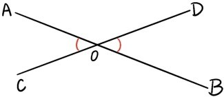
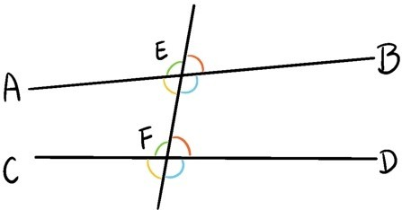

——显而易见的知识
在这一节，要介绍几个显而易见的关于平面几何的知识，普通人接受这些结论都没有任何障碍。我们将这样的结论称为公理。
公理1 过两点有且只有一条直线。

这条公理是非常直观的，当你把一根木条钉在桌面上时，它还可以绕着铁钉旋转，再钉上一枚铁钉时，它就不能动了。由这个公理可推出：
定理1.1 两条直线，要么平行，要么只有一个交点。
证明：（反证法）若两条直线有两个交点A，B，那么过这两点就会有两条直线，这与公理1矛盾（证毕）。
公理2 两点之间线段最短。

没有什么数学知识比这个更直观，更显然的了。就算是动物也知道，朝目标直走，可以最快到达目的地。
公理3 过直线外一点，有且只有一条直线与已知直线平行。
公理3也是显而易见的结论。
直线AB与直线CD相交于一点O时，称∠AOC与∠BOD为对顶角。

定理1.2 对顶角相等。
证明：因为∠AOC+∠AOD=180°，∠BOD+∠AOD=180°，所以∠AOC=∠BOD（证毕）。
当一条直线EF同时与直线AB，直线CD相交时，我们称下图中同颜色的角为同位角，称∠AEF与∠DFE为内错角，也称∠BEF与∠CFE为内错角，称∠AEF与∠CFE为同旁内角，也称∠BEF与∠DFE为同旁内角。因为对顶角总是相等，且相等的角的补角也相等，所以如果4组同位角中有一组相等，则其他3组同位角也相等，两组内错角也相等，两组同旁内角互补。

直观经验告诉我们，如果直线AB与直线CD平行，点E处的4个角通过平移可以与点F处的4个角重合，这就引出了我们的最后一个公理：
公理4 两直线平行，同位角相等。
根据公理4可以得出：
定理1.3 两直线平行，内错角相等，同旁内角互补。